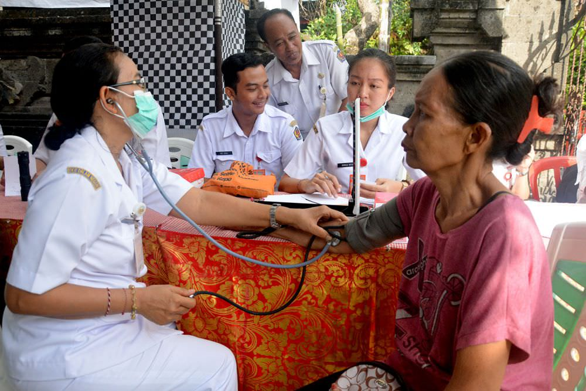

.png)
⋇⊶⊰ Kolaborasi IPS-PPKn-TIK ❣⊱⊷⋇
Selamat datang! 🉠Saya Anastasia Janice dari kelas 93/01. Di sini, saya mengajak kalian untuk menjelajahi Tujuan Pembangunan Berkelanjutan (SDGs) 🌍✨. Web ini dibuat untuk membantu kita memahami SDGs dan bagaimana setiap individu serta komunitas bisa berkontribusi untuk mewujudkan dunia yang lebih baik 🌱💡. Yuk, bergabung dalam perjalanan ini! 🌟🚀
Apa itu SDGs?
Sustainable Development Goals (SDGs) adalah serangkaian tujuan global yang didirikan dan dirumuskan oleh Perserikatan Bangsa-Bangsa (PBB) untuk menciptakan dunia yang lebih berkelanjutan, adil, dan inklusif. SDGs terdiri dari 17 tujuan utama yang mencakup berbagai aspek kehidupan, seperti penghapusan kemiskinan, peningkatan kualitas pendidikan, perlindungan lingkungan, dan kesetaraan gender. Tujuan-tujuan ini dirancang untuk memberikan solusi atas tantangan global yang dihadapi manusia, dengan target pencapaian pada tahun 2030. Setiap tujuan SDGs saling mendukung, sehingga pencapaian di satu bidang dapat mempercepat kemajuan di bidang lain. Misalnya, mengurangi kemiskinan dapat meningkatkan akses pendidikan dan kesehatan.
Penerapan SDGs melibatkan seluruh negara di dunia, baik negara maju maupun negara berkembang, karena tantangan global yang dihadapi memerlukan upaya bersama. Prinsip utama yang mendasari SDGs adalah "tidak meninggalkan siapa pun" (leave no one behind), yang berarti bahwa setiap orang, tanpa terkecuali, harus merasakan manfaat dari pembangunan yang berkelanjutan ini. Oleh karena itu, sangat penting untuk memastikan bahwa kelompok-kelompok rentan dan terpinggirkan, seperti kaum miskin, perempuan, dan minoritas, juga mendapat kesempatan yang sama dalam pembangunan.

Tujuan SDGs yang Dipilih: Kesehatan yang Baik dan Kesejahteraan (SDG 3)
SDG 3: Kesehatan yang Baik dan Kesejahteraan bertujuan untuk memastikan kehidupan yang sehat dan meningkatkan kesejahteraan bagi semua orang di segala usia. Tujuan ini sangat relevan di Indonesia, mengingat tantangan besar yang dihadapi negara ini dalam meningkatkan kesehatan masyarakat. Beberapa isu kesehatan utama di Indonesia meliputi angka kematian ibu dan anak yang masih tinggi, prevalensi penyakit menular dan tidak menular yang terus meningkat, serta ketidakmerataan akses layanan kesehatan, terutama di daerah-daerah terpencil dan miskin.
Angka kematian ibu dan anak yang tinggi menjadi fokus utama dari SDG 3. Berdasarkan data dari UNICEF, salah satu indikator yang penting adalah angka kematian balita (indikator 3.2.1) dan angka kematian neonatal (indikator 3.2.2). Indonesia masih menghadapi tantangan besar dalam hal ini, dan pencapaian target SDG 3 untuk mengurangi angka kematian bayi baru lahir dan balita hingga di bawah 12 dan 25 per 1.000 kelahiran hidup sangat relevan dengan konteks Indonesia.
 Selain itu, Indonesia juga perlu meningkatkan akses pelayanan kesehatan yang lebih berkualitas, terutama di daerah-daerah yang sulit dijangkau. Dalam hal ini, Indonesia perlu memperkuat infrastruktur kesehatan dan memperbanyak tenaga medis terampil di daerah yang kurang terlayani, untuk mengurangi angka kematian ibu (indikator 3.1.1) yang masih cukup tinggi. Program seperti peningkatan cakupan vaksinasi juga menjadi prioritas untuk mencegah penyakit menular yang dapat dicegah, yang sejalan dengan indikator 3.b.1 yang mengukur proporsi populasi yang dicakup oleh semua vaksin yang termasuk dalam program nasional.
Pencapaian SDG 3 sangat bergantung pada kerjasama internasional, baik dalam bentuk bantuan teknis, pendanaan, maupun pertukaran pengetahuan dan pengalaman. Salah satu contoh kerjasama yang sangat relevan adalah dengan negara-negara seperti Aljazair, yang telah berhasil mengembangkan sistem kesehatan yang lebih baik dan memiliki pengalaman dalam mengatasi tantangan serupa dalam hal kesehatan ibu dan anak. Indonesia dapat belajar dari kebijakan yang diterapkan di negara-negara seperti Aljazair untuk meningkatkan kualitas dan akses layanan kesehatan.
“UNICEF merupakan pengawas global untuk pemantauan dua indikator yang mengukur kemajuan
menuju Sasaran 3 yang terkait dengan anak-anak: Indikator 3.2.1 Angka kematian balita dan
Indikator 3.2.2 Angka kematian neonatal. UNICEF juga merupakan pengawas pendamping untuk
Indikator 3.1.2 Proporsi kelahiran yang ditolong oleh tenaga kesehatan terampil dan untuk
Indikator 3.b.1 Proporsi populasi sasaran yang dicakup oleh semua vaksin yang termasuk dalam
program nasional mereka.”
Mengaitkan SDG 3: Kesehatan yang Baik dan Kesejahteraan dengan Isu-isu Global yang Relevan
Isu-isu Kesehatan Global dan SDG 3
Pandemi COVID-19 menunjukan kelemahan dan banyak kekurangan sistem kesehatan di banyak negara, yang terhambat oleh ketidakmampuan untuk memberikan perawatan yang memadai, terutama di negara-negara dengan infrastruktur kesehatan yang kurang berkembang. Dampak pandemi ini sangat besar, mulai dari berkurangnya akses ke layanan kesehatan rutin hingga penambahan beban karena pandemi dan penyakit lainnya. Negara-negara dengan sistem kesehatan yang lemah juga menghadapi tantangan besar dalam mendistribusikan vaksin dan obat-obatan yang dibutuhkan untuk memerangi COVID-19.
SDG 3 mendorong negara-negara untuk memperkuat sistem kesehatan mereka, menjadikannya lebih tangguh dalam menghadapi krisis kesehatan global. Untuk itu, kerja sama internasional menjadi kunci. Salah satu bentuk kerja sama ini adalah COVAX, yang bertujuan memastikan akses vaksin yang adil bagi negara-negara berpenghasilan rendah dan menengah. Namun, meskipun COVAX memberikan akses, ketidakmerataan distribusi vaksin tetap menjadi masalah besar. Oleh karena itu, SDG 3 mendorong kolaborasi yang lebih kuat antarnegara untuk mempercepat distribusi vaksin secara global dan memastikan bahwa seluruh populasi, terutama yang berada di wilayah miskin, tidak tertinggal dalam upaya vaksinasi.

Polusi udara, air, dan tanah adalah faktor utama yang mempengaruhi kesehatan global, terutama pada dampak buruknya yang luas terhadap kualitas hidup manusia. Berdasarkan data dari Organisasi Kesehatan Dunia (WHO), sekitar 7 juta kematian per tahun di seluruh dunia terkait dengan paparan polusi udara, baik di luar maupun dalam ruangan. Di negara-negara berkembang, masalah polusi air dan sanitasi yang buruk memperburuk kondisi kesehatan masyarakat. Misalnya, di beberapa daerah perdesaan di Indonesia, akses terhadap air bersih dan sanitasi yang layak masih terbatas, yang dapat menyebabkan banyak sekali penyakit menular seperti diare dan infeksi saluran pernapasan.